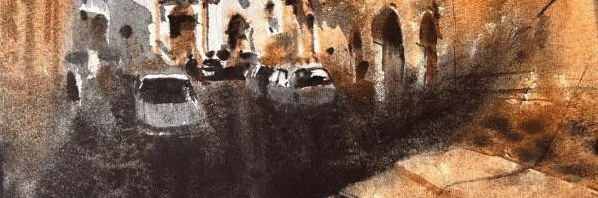
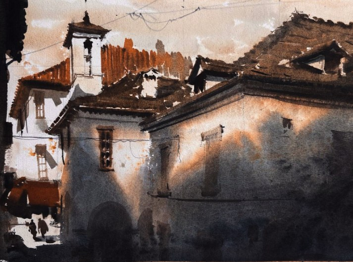
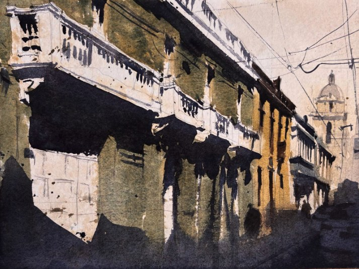
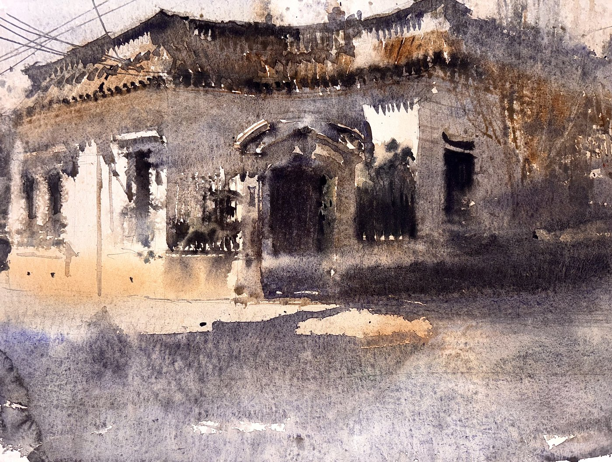
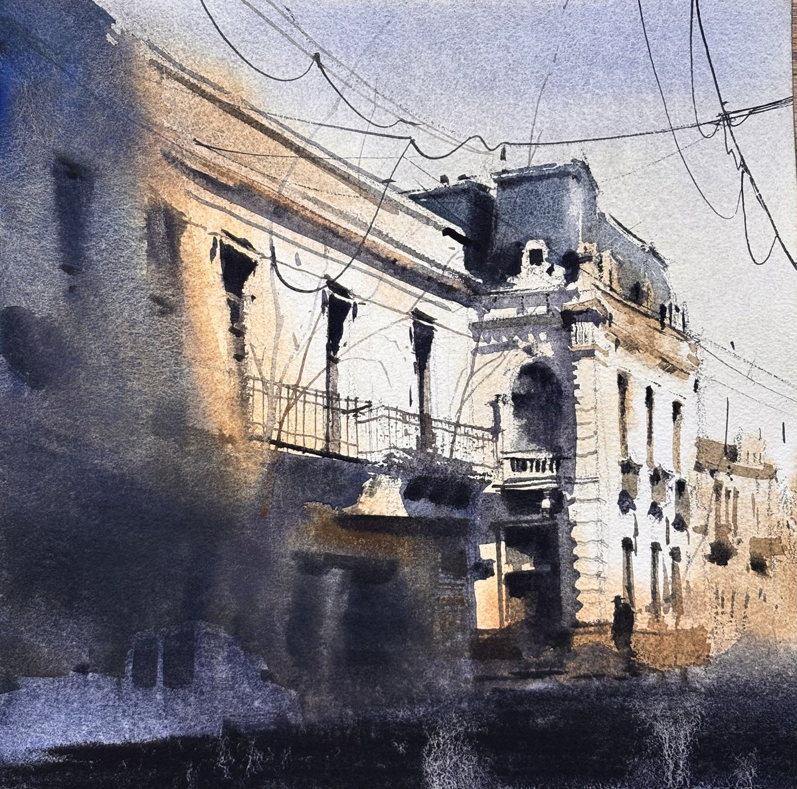
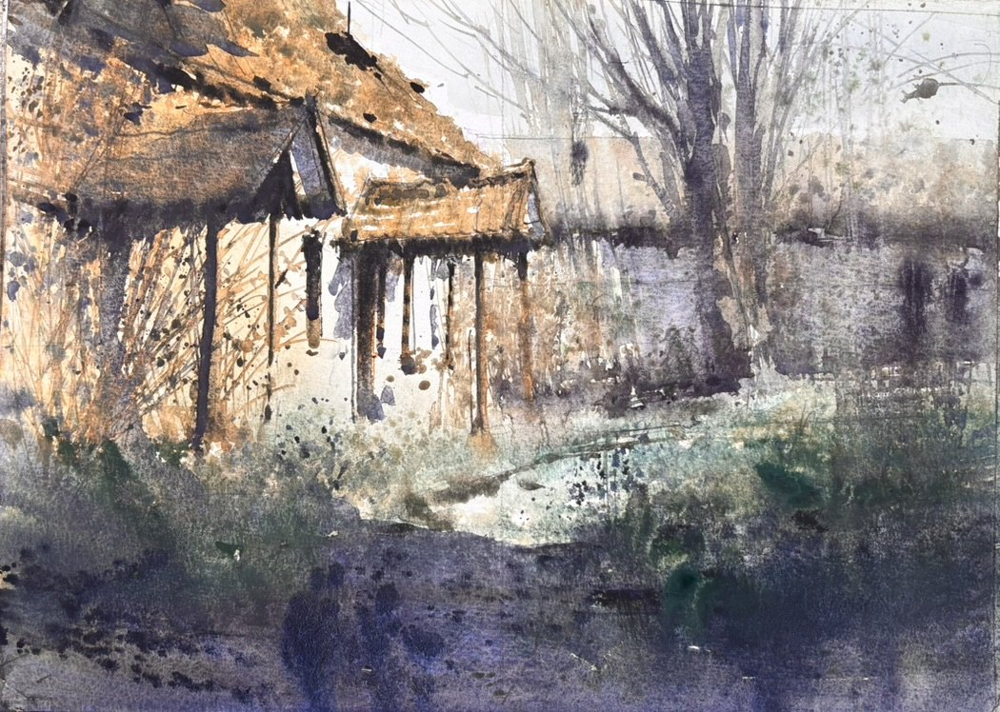
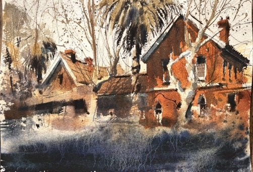

dominar el bocetado
Hacer bocetos sintéticos y precisos que funcionen como base de tu acuarela.
curso de 2 meses · nivel intermedio
¿Sentís que a veces tus acuarelas fluyen con facilidad, pero otras se vuelven un desafío frustrante? La clave no está solo en la inspiración del momento, sino en tener un proceso claro que te permita pintar con confianza, sin importar el día, el estado de ánimo o los materiales disponibles.

Dos meses, pensados para acuarelistas de nivel intermedio.
Hacer bocetos sintéticos y precisos que funcionen como base de tu acuarela.
Para que se adapten a tu idea.
Desde los lavados hasta los detalles.
Mezclá colores con confianza y creá armonías sin depender ciegamente de la referencia.
Figura humana, vehículos, arquitectura, cielos, árboles… Aprendé a incorporarlos sin miedo en tus composiciones.
Aprendé a pintar escenas nocturnas, reflejos en el agua, paisajes urbanos y detalles arquitectónicos que le darán profundidad y carácter a tu trabajo.
Vas a poder elegir las mejores referencias, bocetar con soltura, manejar técnicas precisas y agregar detalles que eleven cada obra. Sin importar el tamaño, tu pintura va a contar historias que conecten con quien la vea.
Lo que tenés que saber antes de anotarte.
clases en vivo
cada una, o un poquito más
Si un día no podés conectarte en vivo, no te perdés nada: la clase queda grabada para que la veas cuando puedas.
Todas las clases tienen corrección en video, una por una, para acompañar el crecimiento de cada artista.
Si todavía tenés dudas, el tráiler te muestra cómo es el curso.






Sumate al Nivel 2 y llevá tus acuarelas al siguiente paso.
quiero sumarme →Curso de 2 meses · nivel intermedio